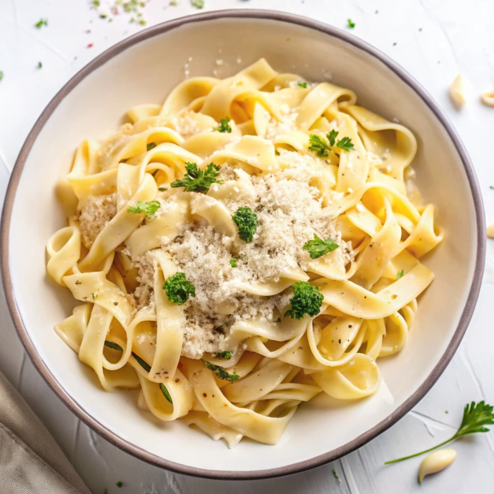

Creamy Garlic Parmesan Pasta
Home

Description
A quick and comforting pasta dish tossed in a creamy garlic and Parmesan sauce. Perfect for an easy weeknight dinner.
Ingredients
For the Pasta
- Fettuccine or spaghetti — 350 g
- Salt — 1 tsp
- Water — 2.5 liters
For the Sauce
- Butter — 3 tbsp
- Garlic, minced — 4 cloves
- Heavy cream — 250 ml
- Parmesan cheese, grated — 100 g
- Black pepper — ½ tsp
- Salt — ½ tsp
- Fresh parsley, chopped — 2 tbsp
- Pasta water — ½ cup
Steps
- Cook the pasta: Bring a large pot of salted water to a boil. Cook the pasta according to the package instructions until al dente. Reserve ½ cup of pasta water before draining.
- Prepare the garlic: Melt the butter in a large skillet over medium heat. Add the minced garlic and cook for 1–2 minutes until fragrant.
- Make the sauce: Pour in the heavy cream and bring it to a gentle simmer. Cook for 2–3 minutes.
- Add Parmesan: Gradually stir in the grated Parmesan until melted and the sauce becomes smooth.
- Combine: Add the cooked pasta to the skillet and toss until evenly coated. Add a little reserved pasta water if the sauce is too thick.
- Season: Add salt and black pepper to taste.
- Serve: Garnish with fresh parsley and additional Parmesan. Serve immediately.